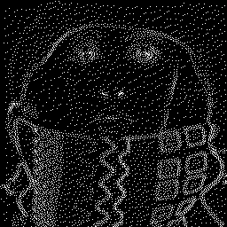
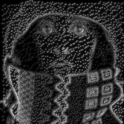

TV Denoising
We consider the Rudin-Osher-Fatemi model,
$$ \min_{u\in BV(\Omega)\cap L^2(\Omega)} \frac{1}{2}\int_\Omega (u-f)^2\ dx + \alpha\int_\Omega |Du|. $$
Numerical results:
References:
- Rudin, Leonid I., Stanley Osher, and Emad Fatemi. “Nonlinear Total Variation Based Noise Removal Algorithms.” Physica D: Nonlinear Phenomena 60, no. 1 (November 1, 1992): 259–68.
- Hilb, Stephan, Andreas Langer, and Martin Alkämper. “A Primal-Dual Finite Element Method for Scalar and Vectorial Total Variation Minimization.” Journal of Scientific Computing 96, no. 1 (July 2023): 24.
Image Inpainting
For \(t>0\), find \(u(t,\cdot)\) in \(H^1(D)\) such that,
\begin{equation}
\left\{\begin{array}{ll}
\partial_t u(t,\cdot) - \Delta u(t,\cdot) = 0, & \text{in}\ D\setminus K, \\
u(t,\cdot) = f, & \text{in}\ K, \\
\frac{\partial u(t,\cdot)}{\partial \mathbf{n}} = 0, & \text{on}\ \partial D, \\
\end{array}\right .
\end{equation}
\[ u(0,\cdot) = \mathbf{1}_{K} f,\ \text{in}\ D. \]
Numerical results:

Inpainting Mask \(K\).

Solution \(u\) over time.
References:
- Marcelo Bertalmio, Guillermo Sapiro, Vincent Caselles, and Coloma Ballester. “Image inpainting”. In Proceedings of the 27th Annual Conference on Computer Graphics and Interactive Techniques, SIGGRAPH ’00, page 417–424, USA, 2000. ACM Press/Addison-Wesley Publishing Co..
- Zakaria Belhachmi, Dorin Bucur, Bernhard Burgeth, and Joachim Weickert. “How to Choose Interpolation Data in Images”. SIAM Journal of Applied Mathematics, 70:333–352, January 2009.
Optical Flow
We consider the following optical flow estimation problem:
$$ \left\{\begin{array}{ll}
-\alpha \Delta u_1 + K_\rho\star(f_x)^2\ u_1 + K_\rho\star(f_x f_y)\ u_2 = - K_\rho\star(f_x f_t), & \text{in}\ [0,T]\times D, \\
-\alpha \Delta u_2 + K_\rho\star(f_y f_x)\ u_1 + K_\rho\star(f_y)^2\ u_2 = - K_\rho\star(f_y f_t), & \text{in}\ [0,T]\times D, \\
\frac{\partial u_1}{\partial\mathbf{n}} = \frac{\partial u_2}{\partial\mathbf{n}} = 0, & \text{on}\ [0,T]\times \partial D.
\end{array}\right . $$
Numerical results:
Optical Flow \(\mathbf{u}:=(u_1,u_2)\).
References:
- A. Bruhn, J. Weickert, and C. Schnörr, Lucas/Kanade Meets Horn/Schunck: Combining Local and Global Optic Flow Methods, International Journal of Computer Vision, 61 (2005), pp. 211–231.